Les roulements et les paliers sont des organes de précision, mais ce sont aussi des biens de consommation courante. La plupart des machines en comportent.
Comme tout organe de précision, ils présentent une certaine fragilité et demandent des précautions particulières. Sans ces quelques soins, le risque de détérioration est grand : la précision diminue, la marche est bruyante, saccadée, un blocage peut se produire.
Quand un roulement se détériore, le roulement lui-même est rarement en cause. Il faut analyser le montage, les conditions opératoires, la lubrification ou l’entretien.
Dans ce module, nous étudierons l’utilisation des roulements, les principaux types de détériorations, leurs aspects, leurs causes, et les remèdes que l’on peut envisager.
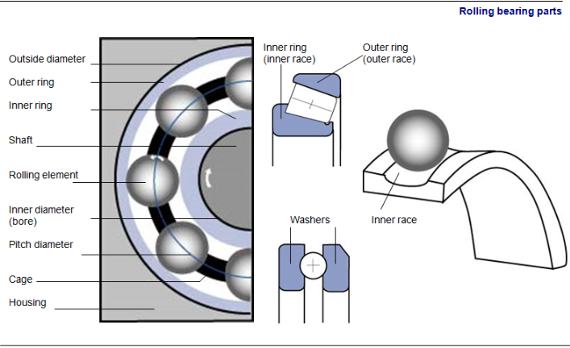
Le roulement est un organe de base qui assure une liaison mobile entre deux éléments d’un mécanisme en rotation l’un par rapport à l’autre. Sa fonction est de permettre la rotation relative de ces éléments, sous charge, avec une précision et avec un frottement minimal.
Types de roulementsLe type de corps roulant utilisé permet de distinguer deux grandes familles de roulements :
Pour une charge donnée, la pression de contact entre corps roulants et chemin est répartie le long d’une ligne lorsqu’il s’agit de rouleaux. Dans le cas des billes, elle est concentrée en un seul point. C’est la raison pour laquelle, pour un même encombrement, les roulements à rouleaux supportent des charges plus importantes et des vitesses limites plus faibles.
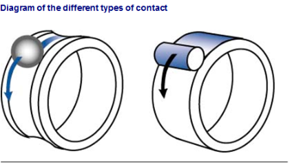
Charges prédominantes et familles de roulementsSelon que la charge est radiale, axiale, une combinée des deux ou à débattement angulaire, le type de roulement diffère.
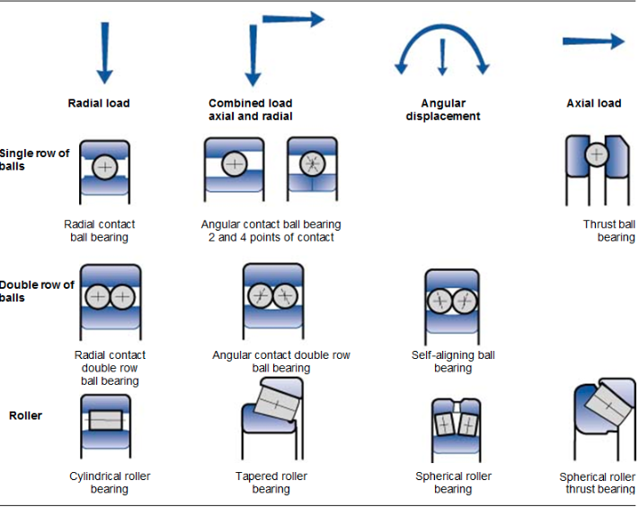
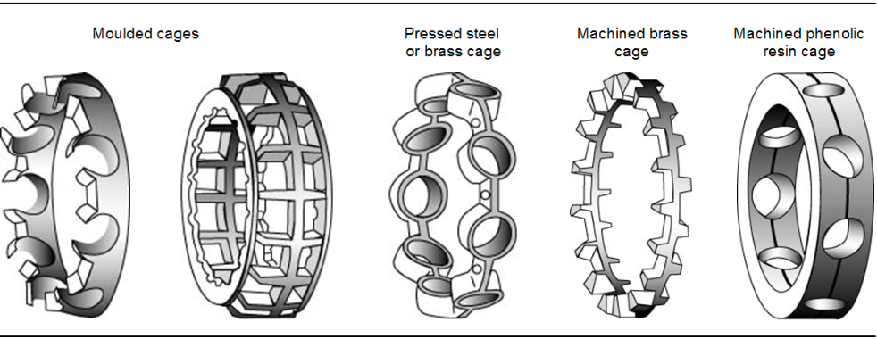
L’utilisation rationnelle d’un roulement dépend de cinq points principaux :
Le choix d’un roulement adapté à un mécanisme demande la connaissance :
Le facteur le plus important pour le choix du roulement est la charge (la charge intervient de façon prépondérante dans la durée de vie d’un roulement, la vitesse beaucoup moins). Or, dans bien des applications, les charges appliquées, radiales et axiales, ne sont pas constantes, et il y a souvent présence de vibrations et parfois de chocs.
Grâce à cet ensemble de données, intensité, direction et nature des charges, on déterminera :
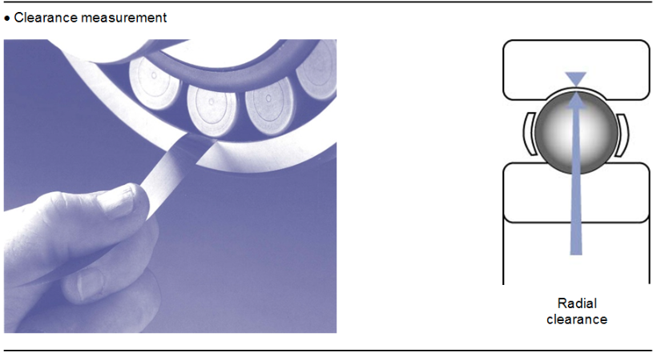
D’autres facteurs sont aussi à considérer :
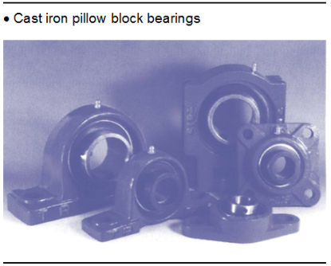
et enfin, ce qui est très important dans la pratique :
{itemize} l’emplacement destiné à recevoir le roulement, la dimension de l’arbre ; le prix d’achat, le rapport prix d’achat/durée d’utilisation.
itemize
Chaque fois que possible, le choix portera sur un roulement normalisé, courant, et ce n’est qu’exceptionnellement qu’on fera appel à des roulements spéciaux.
Les roulements sont des organes essentiels dans une machine. Si un incident les met hors service, il est indispensable de pouvoir les remplacer sur-le-champ. Si l’on effectue un nombre important de remplacements à une période fixe de l’année, par exemple après un arrêt technique, il est bon de prévoir assez tôt ses approvisionnements pour éviter toute rupture de stock chez le fournisseur.
Pour diverses raisons, il est donc utile :
Les roulements sont fournis avec une protection que l’on peut considérer comme suffisante pour leur éviter toute détérioration lors des manipulations et pendant le stockage. Ils doivent demeurer dans leur emballage d’origine jusqu’à leur utilisation.
Les fabricants de roulements donnent des indications très détaillées sur les techniques de montage qui varient en fonction des types de roulement. Le montage est en effet une opération assez délicate. Si elle est mal réalisée, elle peut être cause de bien des incidents en service. On peut résumer en quatre points l’ensemble des conseils essentiels de montage : propreté, produits de protection, usinage, mise en place.
Les roulements sont des ensembles de précision qui ne doivent être souillés par aucune impureté. Dure comme le sable ou tendre comme une fibre de coton, toute matière étrangère causera des destructions. On devra ainsi maintenir les roulements dans leur emballage jusqu’au dernier moment.
Les roulements neufs sont enduits d’un produit de protection. Il s’agit en général d’une huile assez fluide contenant des additifs spéciaux anticorrosion et parfois de rodage. Le fabricant indique si ce produit doit être laissé ou éliminé.
L’usinage de la portée et du logement présente une grande importance. Les caractéristiques géométriques nécessaires et les tolérances indiquées par le constructeur de la machine doivent être parfaitement respectées.
Des formes ovales ou coniques, des surfaces d’appui non conformes réduisent considérablement la durée de fonctionnement du roulement.
Pour augmenter le diamètre d’un arbre, pour diminuer l’espace d’un logement, on pourra avoir recours à un dépôt de métal ou à l’utilisation d’une bague
La mise en place se fait avec soin et précaution, en employant les outils convenables et la technique recommandée.
Les jeux prévus doivent être conservés scrupuleusement, car un jeu trop grand engendre des vibrations ou des glissements ; un jeu trop faible crée des tensions. Les axes doivent être convenablement mis en place pour éviter tout désalignement. Toutes les surfaces d’appui et les épaulements doivent présenter un état de surface suffisant.
La mise en place dans le logement et sur l’arbre, dont la surface sera parfaitement propre, peut être réalisée selon différentes techniques. Mais, dans tous les cas, on s’interdira :
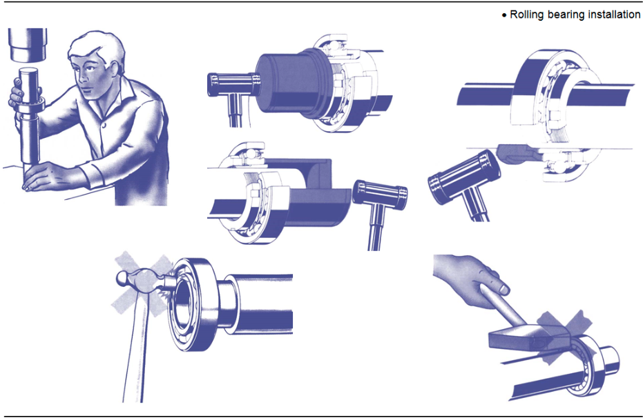
La durée d’un roulement dépend du nombre de contraintes qu’il subit avant l’apparition des premiers signes de fatigue. On l’exprime en millions de tours ou, si l’on fixe la vitesse, en heures de fonctionnement.
Comme pour des roulements identiques travaillant dans des conditions identiques, la destruction par fatigue se produit après un nombre de contraintes très variable, on est obligé d’avoir recours à la notion de probabilité.
Les roulements sont des organes qui supportent des efforts parfois très faibles quand il s’agit de guider un mouvement, mais parfois très élevés quand ils doivent supporter une charge, en butée par exemple (charge axiale). C’est le cas des roulements de butée de paliers de turbine.
Dans un mouvement, les charges peuvent être très variables en intensité, surtout s’il y a des vibrations, des chocs en direction (charges radiales, charges axiales). La charge est l’élément prépondérant dans le choix et la durée du roulement. L’avantage du roulement à rouleaux coniques est qu’il est apte à supporter de fortes charges axiales et radiales.
Un roulement classique travaille normalement jusqu’à 100 °C. Au-delà, sa durée de vie, sa capacité de charge sont en général bien réduites.
La vitesse limite à laquelle un roulement peut tourner est en général indiquée par le constructeur. Cette vitesse est fonction du roulement, de son type, de sa dimension, de sa cage, et des conditions de travail (charge supportée, montage, température ambiante, lubrification).
Les paliers à manchon ou coussinets sont constitués habituellement d’une garniture en métal antifriction placée dans un logement d’acier ou de fonte.
Un métal antifriction relativement mou est utilisé, de façon à ce qu’il cède et se déforme quelque peu pour s’adapter aux charges auxquelles il est soumis. De plus, les particules de toute sorte pourront s’y enfoncer plutôt que de rayer l’arbre. Étant relativement mou, ce métal deviendra lisse à l’usage. Il résiste aussi assez bien à la corrosion. Ils sont utilisés lorsque la charge est lourde, et pour les hautes vitesses.
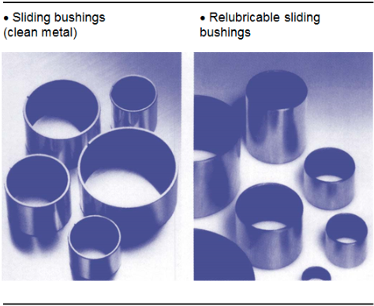
Les rôles du lubrifiant sont nombreux :
Dans un palier lisse, les surfaces en présence reposent plus ou moins l’une sur l’autre. Mais dans un roulement, dans un engrenage, entre une came et un poussoir, les organes ne reposent que sur des surfaces extrêmement réduites. Le lubrifiant devra toujours être très propre et conservé dans des conditions les plus saines.
La lubrification à l’huile permet une circulation qui a de nombreux avantages :
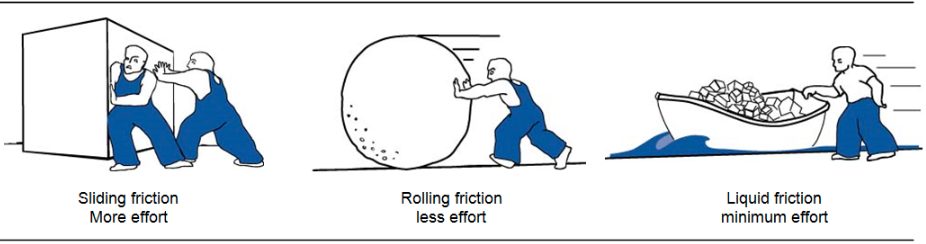
La lubrification à l’huile est souhaitable dans les roulements à billes ou à rouleaux. Il ne devrait se produire théoriquement qu’un frottement de roulement, frottement qui réclame un graissage très limité, mais les éléments subissent une déformation temporaire lorsqu’ils sont soumis à une charge, et le contact, qui devrait être ponctuel ou linéaire, est en fait une surface, ce qui conduit à des frottements de glissement.
De plus, les rouleaux appuient sur la collerette, la cage qui maintient à distance les éléments de roulements, frotte contre ceux-ci ou contre la bague intérieure. Toutes ces causes donnent une grande importance au problème de graissage.
Systèmes de lubrification à l'huile
Caractéristiques des huiles à utiliser
Les roulements doivent être lubrifiés avec une huile minérale raffinée, exempte de toute impureté et possédant une grande résistance à l’oxydation.
Certains additifs confèrent aux huiles des propriétés anticorrosion et antimousse, et l’on recommande d’une façon générale des huiles possédant ces additifs pour les conditions de travail difficiles, à vitesses ou à températures élevées.
La viscosité de l’huile utilisée doit être choisie de façon à ce que la lubrification du roulement s’effectue dans les meilleures conditions possibles.
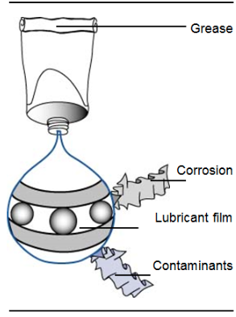
ViscositéLa viscosité est une mesure de la résistance qu’offre un liquide à sa déformation interne ou cisaillement. Elle indique la capacité de s’écouler d’un liquide en général. En ce qui nous concerne, la viscosité d’un lubrifiant détermine sa capacité de supporter une charge, la puissance requise pour vaincre le frottement interne et la quantité de chaleur qui se dégagera à cause du frottement interne.
La température d’un lubrifiant peut modifier grandement sa viscosité. À mesure qu’augmente la température, le lubrifiant s’éclaircit et devient moins visqueux (la viscosité sera réduite). Réciproquement, à basse température, l’huile deviendra plus épaisse et plus visqueuse (la viscosité sera accrue).
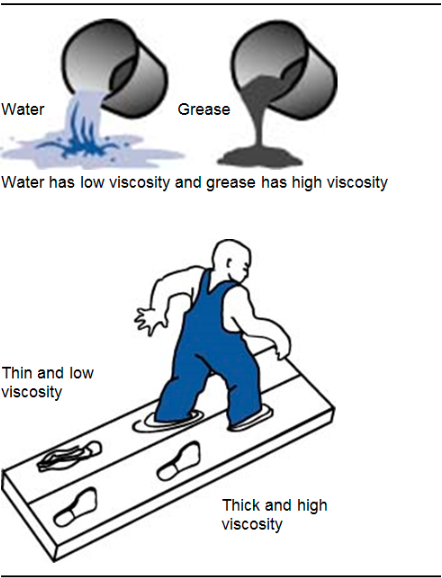
L’unité de mesure de la viscosité est le centistoke (en Unité Internationale mm2/s.)
Dans les conditions normales d’emploi pour des roulements peu chargés, on estime qu’il convient d’utiliser une huile ayant, à la température d’utilisation, une viscosité de l’ordre de 12 à 15 centistoke. Cependant, pour des roulements fortement chargés et subissant des chocs, une viscosité nettement plus élevée est nécessaire.
En principe, on suivra les conseils donnés par les tableaux de préconisations des marques de lubrifiants.
Point d’inflammabilité et point de feuLe point d’inflammabilité d’une huile est la température à laquelle l’huile dégage suffisamment de vapeur pour que celle-ci, une fois combinée à l’air et exposée à une source d’allumage, s’enflamme spontanément.
La connaissance du point d’inflammabilité et du point de feu d’une huile est importante : elle indique les limites de température de fonctionnement au-delà desquelles il y a danger d’inflammation ou d’explosion.
C’est un paramètre extrêmement important pour la lubrification des appareils, comme les groupes hydrauliques près des fours : l’environnement proche des fours est souvent très chaud, il faut donc un lubrifiant qui ait un point de feu suffisamment haut.
Lubrification à la graisseOn utilise le plus souvent des graisses pour la lubrification des roulements. Lorsqu’il est difficile d’effectuer des graissages fréquents ou lorsque le boîtier manque d’étanchéité, la graisse est le meilleur lubrifiant à cause de sa propriété de rester sur l’organe à graisser. Il faut toutefois souligner que les roulements qui ne sont pas convenablement entretenus, et surtout trop graissés, se détériorent rapidement par suite de la destruction du lubrifiant. Cette destruction est consécutive à un cisaillement important, à une température élevée et à une surpression dans le boîtier.
Certains appareils (ventilateurs, appareils ménagers, moteurs électriques…) sont graissés pour leur durée :
Dans la lubrification à la graisse, on obtient en général de meilleurs résultats lorsque la graisse forme une gouttière dans laquelle roulent les billes ou les rouleaux, sans malaxer et sans travailler le lubrifiant. Le contact entre les éléments de roulement et la graisse est alors juste suffisant pour maintenir autour de ceux-ci un film mince qui lubrifie les surfaces en contact et amortit les chocs que peut subir le roulement. Dans ces conditions, une très faible partie du lubrifiant est utilisée à la fois.
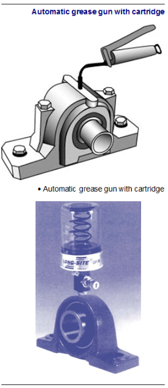
Systèmes de graissagePlusieurs systèmes de graissage sont utilisés pour la lubrification à la graisse des roulements.
Le graisseur : la graisse neuve est introduite par l’intermédiaire d’un graisseur. Il faut veiller à éviter le bourrage, néfaste au même titre que la carence et bien conserver en mémoire que le roulement ne fonctionne valablement que garni seulement au tiers de sa capacité de contenance .
Le garnissage : suivant une fréquence déterminée par les conditions opératoires, on démonte les roulements, on les nettoie au White Spirit ou au pétrole de qualité, en évitant l’utilisation de chiffons qui laissent des peluches, et on les garnit en veillant à ne remplir le boîtier du roulement qu’au tiers. Un roulement « bourré » de graisse et tournant rapidement chauffe et se détériore.
Le graissage sous pression : ce système un peu plus coûteux est réservé au matériel qui travaille dans des conditions pénibles.
On remarque qu’en pratique, bien souvent sur des machines courantes, avec des roulements relativement peu chargés travaillant dans une ambiance de 10 à 25 °C.
Une trop grande lubrification dans les systèmes centralisés automatiques conduit à une perte de lubrifiant, donc à une dépense inutile puisque les roulements sont munis d’un système d’évacuation de trop plein de graisse. De plus, cette graisse peut contaminer les produits fabriqués et, de toute façon, elle posera un problème de nettoyage et peut être cause d’accidents.
La quantité de graisse à utiliser est très faible. Pour donner un exemple, on estime que 100 cm3 de graisse par cm d’alésage et par an suffisent pour des roulements à simple rangée de billes ou de rouleaux et d’alésage compris entre 20 et 100 mm travaillant 8 000 h, c’est-à-dire en continu. Ces quantités sont toutefois supérieures, de l’ordre de dix fois, à ce qu’il convient de fournir à un roulement dont les appoints de graissage s’effectuent par un « raccord graisseur ».
Caractéristiques des graisses à utiliserLe roulement est un produit « noble ». On ne doit utiliser dans les roulements que des graisses de qualité supérieure : graisses dites « pour roulements », graisses dites « multifonctionnelles », ou « multiservices ». Ces graisses, d’une grande stabilité physique et mécanique, et d’adhérence suffisante, contiennent généralement des additifs anti-oxydant et anticorrosion. En présence d’eau, on choisira des graisses présentant une bonne résistance à l’eau et protégeant contre la corrosion.
Pour des conditions opératoires pénibles, en présence de chocs ou de pressions très élevées, des graisses contenant des additifs « extrême pression » peuvent être utilisés.
AppointsPour éviter les incidents dus à une mauvaise utilisation de la graisse ou à un bourrage qui conduit à des élévations de température, à une destruction prématurée de la graisse et parfois à un serrage du roulement par échauffement, on prendra quelques précautions lors des appoints :
Hautes températures
Jusqu’à 120 °C, les huiles ou les graisses classiques conviennent. Au-delà, il faut choisir un roulement qui supporte la température de fonctionnement et le lubrifiant haute température adapté.
Huiles : jusqu’à 140 °C environ, des huiles minérales très résistantes à l’oxydation et parfois des huiles de moteur détergentes peuvent donner satisfaction. Au-delà, des huiles synthétiques sont préférables.
Graisses : jusqu’à 160 °C, on utilise souvent des graisses à base de bentonite et d’huiles minérales. Au-delà, on préfère des graisses contenant des fluides synthétiques, esters ou silicones. Signalons que ces graisses, très coûteuses, ne supportent pas toujours les charges et les vitesses tolérées par les graisses classiques.
Grandes vitessesSi le roulement est lubrifié à la graisse, on préconise une graisse extrême pression dont la consistance est souvent liée aux caractéristiques du système de graissage.
Présence d'eau
Les projections modérées d’eau sont très bien tolérées par les graisses classiques. Si le roulement est lavé constamment par l’eau, il faudra néanmoins recourir à des graisses insolubles et qui le protègent bien contre la corrosion. Dans les cas extrêmes, on emploie une graisse à la silicone qui chasse l’eau.
Mis à part le graissage, les roulements travaillant dans des conditions faciles ne demandent que très peu de surveillance. Les roulements dits « graissés à vie » (en fait « graissés pour leur durée de vie ») fonctionnent sans aucune intervention.
Les montages travaillant dans des conditions difficiles, ceux de grandes dimensions, ceux dont le bon fonctionnement est vital pour une machine doivent en revanche être surveillés. La surveillance portera d’abord sur le bon état des systèmes de fixation, puis sur :
Ces roulements seront d’autre part inspectés, éventuellement démontés et nettoyés.
En service, la température de fonctionnement d’un roulement dépend de la température ambiante, de la charge, de la vitesse et de la lubrification.
Une mesure grossière à la main, qui supporte jusqu’à 55 °C, suffit dans les cas simples ; sur les machines où la température peut être élevée, et surtout où la bonne tenue du roulement est d’une grande importance, on montera des dispositifs de prise de température placés au plus près des roulements. Dans des conditions de travail difficiles, en particulier sous forte charge et à vitesse élevée, la température du roulement peut atteindre et même dépasser légèrement 100 °C sans danger pour le matériau ; dans les conditions courantes toutefois, ces valeurs ne sont pas atteintes. Ainsi, on peut estimer que pour des charges et des vitesses modérées, la température se situe de dix à trente degrés au-dessus de l’ambiance.
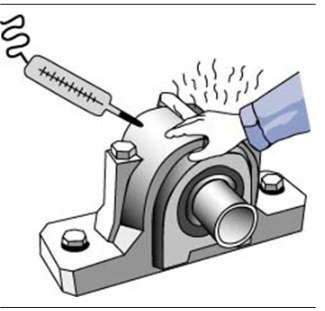
Une cause de la température trop élevée doit être recherchée et éliminée car, si elle persiste, le roulement a de fortes chances d’être en danger. Dans deux cas toutefois, une marche à température relativement élevée peut être considérée comme normale :
Après une heure de fonctionnement dans le premier cas, quand les éléments ont fait leur chemin, une journée dans le second quand le rodage est terminé, la température doit baisser.
Un roulement en bon état produit en tournant un bruit léger et régulier, agréable à l’oreille. Un défaut quelconque se traduit par un bruit plus ou moins désagréable, continu ou transitoire. Ce bruit a souvent besoin d’être amplifié pour être reconnu et étudié. On sait depuis longtemps dans les ateliers qu’on peut canaliser, isoler le bruit que fait un roulement par un instrument rustique, comme par exemple le manche d’un tournevis appliqué à l’oreille. Un opérateur exercé peut ainsi diagnostiquer un certain nombre d’incidents qui se préparent
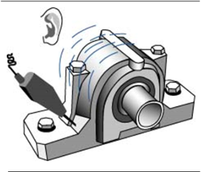
Ces bruits, que la pratique apprend facilement à reconnaître, se décrivent bien difficilement :
Des appareils relativement perfectionnés, dits de surveillance ou de contrôle périodique de l’état des roulements permettent de mesurer les vibrations et de suivre l’évolution résultant des détériorations qui se produisent en service.
En effet, un très faible écaillage, par exemple, produit une déformation sur la surface qui, pendant le mouvement, conduit à la production d’un micro-choc mécanique. Ce choc engendre des vibrations induites, que l’appareil capte et transforme en tension électrique d’autant plus élevée que la vibration, c’est-à-dire le choc, c’est-à-dire l’écaillage, est important.
Toutefois, il faut signaler que les roulements, éléments de grande précision, ont des durées de vie théoriques très longues. Leur détérioration prématurée est due dans la majorité des cas à des événements extérieurs : mobiles tournant avec balourd important (par exemple ventilateur), mal alignés (moteurs, pompes…), comportant des défauts électriques (moteurs avec spires en court-circuit, barre-brisées…), etc.
Dans la majorité des cas cependant, on ne peut pas se contenter d’une simple indication de détérioration. Le besoin de connaître la cause première de la défaillance conduira à utiliser un type d’appareil plus élaboré et complémentaire : l’analyseur de vibration.
L’obtention et l’interprétation d’une « signature vibratoire » produite par la machine observée permettra l’identification du défaut mécanique et sa correction, d’où une prolongation de la durée de vie de la machine. S’il est nécessaire malgré tout de remplacer le roulement, la cause de détérioration ayant disparu, le nouveau roulement fonctionnera dans de meilleures conditions.
Différents types d’analyseurs existent, certains destinés à l’entretien, robustes, faciles à employer, d’autres destinés à l’étude, généralement couplés à des calculateurs, sont utilisés par les constructeurs pour la mise au point de machines ou de structures. Utilisés par un personnel formé et compétent, ils permettent de résoudre la majorité des problèmes qui peuvent se présenter. Grâce à ces appareils, on peut disposer d’une qualité très élevée de maintenance, ce qui est indispensable avec du matériel complexe, onéreux et vital pour une installation.
Au montage, lors de la mise en route, le roulement doit être nécessairement garni du lubrifiant choisi par le constructeur de la machine. En service le lubrifiant se consomme, se pollue, perd ses caractéristiques.
ConsommationLa consommation d’huile ou de graisse est surtout liée aux fuites, éventuellement à des projections.
PollutionLa pollution peut être provoquée par :
Dans tous les cas, le système d’étanchéité doit être choisi de manière à ce qu’il réduise ou supprime tous les types de pollution par contamination extérieure.
Perte de caractéristiques OxydationLes huiles ou les graisses s’oxydent en service. Cette oxydation est d’autant plus rapide que la température est élevée : sensible dès 60 °C, une élévation de 10 °C double la vitesse d’oxydation. Les conséquences de l’oxydation du lubrifiant sont dangereuses pour le roulement par formation d’acides qui causent : des corrosions, des dépôts de gommes par l’huile qui diminuent les jeux, l’augmentation sensible de la consistance de la graisse qui, trop dure, ne participe plus au graissage d’où usure, échauffement, destruction.
Épuisement des additifsLes huiles et les graisses de qualité supérieure possèdent des additifs, en particulier des anti-oxydants et des anticorrosions, qui s’épuisent en service par suite des réactions chimiques auxquelles ils participent.
Durcissement de la graisseÀ température élevée, dès 80 °C, une évaporation de l’huile que contient la graisse peut se produire dans le film très mince qui recouvre les surfaces du roulement. À haute température, cette évaporation est très sensible et la graisse devient inutilisable par perte de son lubrifiant liquide.
Destruction de la structure de la graisseUne graisse est une huile minérale ou synthétique gélifiée ; l’agent gélifiant est en général un savon de lithium, de sodium, de calcium, d’aluminium ou une argile, une bentonite. La structure, la résistance à l’oxydation et aux contraintes mécaniques du gel, ont une grande importance quand les roulements travaillent dans des conditions difficiles.
Schématiquement, en ne faisant intervenir que la vitesse et la température, et en considérant une application sur roulement à billes modérément chargé, on peut considérer les durées de vie en heures regroupées dans le tableau suivant.
Les valeurs de durée de vie indiquées ci-après sont celles d’une bonne graisse pour roulement courant, pouvant travailler jusqu’à 125 °C.
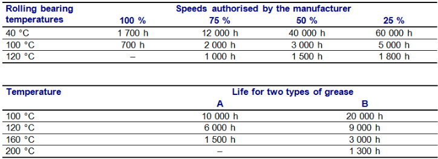
Pour lutter contre l’ensemble de ces contraintes (consommation, pollution, perte de caractéristiques…) subies par le lubrifiant, il est nécessaire, pour que le roulement ait toujours à sa disposition une qualité et une quantité convenable de lubrifiant, de faire des appoints, des vidanges et, souvent, pour les circuits d’huile, une filtration.
AppointsCes fréquences dépendent des caractéristiques du roulement (type, dimensions), des caractéristiques de la graisse et des conditions de service (vitesse, température et charge). Ces fréquences peuvent être liées à la lubrification, mais aussi parfois à l’étanchéité appliquée. Quant aux quantités apportées, elles ne représentent que de 1 à 5\
Remplacement de la graisseLes fréquences de remplacement de la graisse en service sont en général données par le constructeur de la machine. L’expérience peut conduire à les modifier, mais il faut agir prudemment. Comme pour les appoints, les fréquences sont fonction des caractéristiques du roulement, de la graisse et des conditions opératoires.
Après ouverture du palier, on élimine la graisse usagée, on effectue un nettoyage au pétrole ou au White Spirit par exemple, et on regarnit de graisse le roulement. Sauf exception, le boîtier ne doit être rempli qu’au tiers environ.
Vidange de l’huileLes fréquences de vidange d’huile seront déterminées également en fonction des indications du constructeur et de l’expérience. Si l’on ne craint pas de pollution et si la température ne dépasse pas 60 °C, une durée d’un an est en général admissible. À 80 °C, il est toutefois préférable de surveiller l’état de l’huile et de la changer tous les six mois. La vidange se fait à chaud. L’élimination du produit usé doit être la plus complète possible. En l’absence de dépôts très adhérents, on peut se contenter d’un rinçage avec l’huile de la qualité qui sera utilisée et qu’on retirera complètement avant le remplissage définitif d’huile neuve.
Lors de l’ouverture des paliers pour le garnissage, on inspectera le roulement Si les éléments sont bleus, c’est qu’ils ont été portés à haute température. Le roulement doit être changé et la lubrification reétudiée.
Si la graisse est noire et plastique, elle est restée trop longtemps en service, sa qualité ne convient pas et il y a une usure exagérée du roulement dont il faut trouver la cause. Si la graisse a pris une couleur pâle, il est vraisemblable qu’elle a émulsionné de l’eau. Si la graisse a pris une couleur rouge brun, elle est polluée, sans doute par la rouille provenant de la corrosion de contact.
Si la graisse est fluidifiée, elle a travaillé au-delà de ses possibilités, le gel s’est rompu ou bien elle a absorbé une trop grande quantité d’eau ou des vapeurs d’acide ou de solvant. Sauf cas exceptionnel, on ne fait pas d’analyse sur les graisses en service.
HuileIl est bon de vérifier de temps à autre l’état d’une huile en service. Une coloration qui a foncé indique vraisemblablement une oxydation sensible. Un trouble décèle une entrée d’eau. Dans des conditions de travail difficiles, quand le lubrifiant est très sollicité, il convient de le suivre par des analyses. Suivant le type d’huile en service, on effectuera des mesures diverses, mais en général on regardera :
La ferrographie est une méthode d’analyse moderne qui étudie les particules d’usure présentes dans l’huile. L’appareil analyseur est un ferrographe qui permet de déterminer, en fonction de la proportion des grosses et des petites particules d’usure, l’importance, la gravité des destructions qui sont en train de se produire. On peut ainsi facilement suivre l’évolution du matériel en service.
La plaquette sert à une étude plus complète. On étudie au microscope les particules qui se sont déposées. La forme et la dimension des particules révèlent les incidents qui se produisent, dés leur apparition.
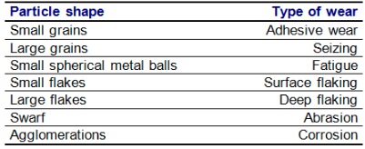
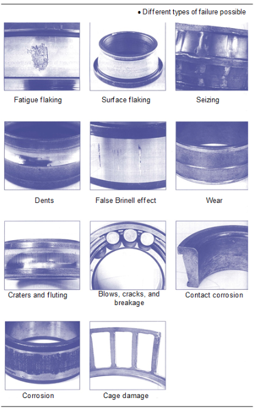
La ferrographie est une méthode fine d’analyse qui apporte un grand nombre de renseignements. C’est une méthode relativement coûteuse car elle est longue et demande un personnel qualifié.
Système d'étanchéitéLes systèmes d’étanchéité jouent un rôle important et capital, en présence d’atmosphère polluée, dans la protection du roulement.
Périodiquement, ces systèmes doivent être inspectés, opérations de vérification très simples en général, mais indispensables. Il faut s’assurer que :
Les rondelles et les bagues qui doivent frotter sur des surfaces très lisses sont à changer au premier signe de détérioration.
DémontageLes roulements courant travaillant dans des conditions normales n’ont pas à être démontés, car l’opération présente pour eux de grands risques de pollution et de détérioration éventuelle.
En revanche, quand le roulement travaille dans des conditions difficiles et qu’il est l’un des organes vitaux d’une machine qui doit fonctionner en continu, il est bon de vérifier son état régulièrement par mesure de vibration sans démontage.
Les fréquences d’inspection sont fixées par l’expérience. On inspecte un roulement dix à vingt fois au cours de sa vie. Ainsi, pour une machine possédant un roulement d’une durée de vie nominale de 100 000 h, on fera l’inspection tous les ans, c’est-à-dire toutes les 8 000 h.
NettoyageOn utilise parfois des installations bien agencées comprenant deux bains successifs de lessives chaudes, un bain de rinçage, un séchage, un bain d’huile pour trempage. Pour les roulements de dimensions moyennes, on a recours le plus souvent au White Spirit ou au pétrole dans lequel on trempe et on brosse le roulement après élimination sommaire de la graisse avec un chiffon non pelucheux.
Après un second trempage dans du White Spirit propre, on sèche le roulement et, suivant les cas, on le garnit de graisse ou on l’enduit d’huile. Si l’on utilise une installation de nettoyage au solvant, il faut, après séchage, tremper immédiatement le roulement, très sensible à la corrosion, dans de l’huile fluide et chaude, vers 60 °C, pour l’entourer d’une pellicule de protection.
Si l’on nettoie avec une lessive alcaline, on doit effectuer un trempage dans de l’eau bouillante, un séchage et un nouveau trempage dans de l’huile fluide et chaude. Dans tous les cas, l’huile du bain doit être neuve, de qualité supérieure et contenir de préférence des additifs anticorrosion. Une huile pour turbine ou une huile pour commande hydraulique convient très bien. Pour éviter le craquage de l’huile, le chauffage doit se faire de façon douce. Si l’on utilise une résistance chauffante, elle ne doit pas dépasser 1 W par cm2 de surface chauffante. Bien monté, bien lubrifié, bien protégé, et après sa période de rodage, très courte, le roulement est stable à son poste, sauf incident extérieur ou mauvais choix de l’utilisateur.
Lorsqu’il arrive à la fin de sa durée de vie, les premiers signes de fatigue du roulement apparaissent. La rotation devient de plus en plus bruyante à mesure que l’écaillage gagne en surface, la température s’élève, la précision dans le fonctionnement se perd, des vibrations apparaissent. Le roulement est alors à remplacer.
Le temps qui s’écoule entre les premiers symptômes et la destruction totale est très variable. Un roulement peu chargé tournant à vitesse réduite ne se détériorera que lentement, mais pour un roulement fortement chargé ou tournant à vitesse très élevée, la destruction complète est rapide. C’est pour cette raison que ce type de roulement doit être soigneusement et régulièrement ausculté ; une étude des vibrations qu’il engendre permet, entre autres moyens, de connaître parfaitement son état et de décider en connaissance de cause du moment du remplacement.